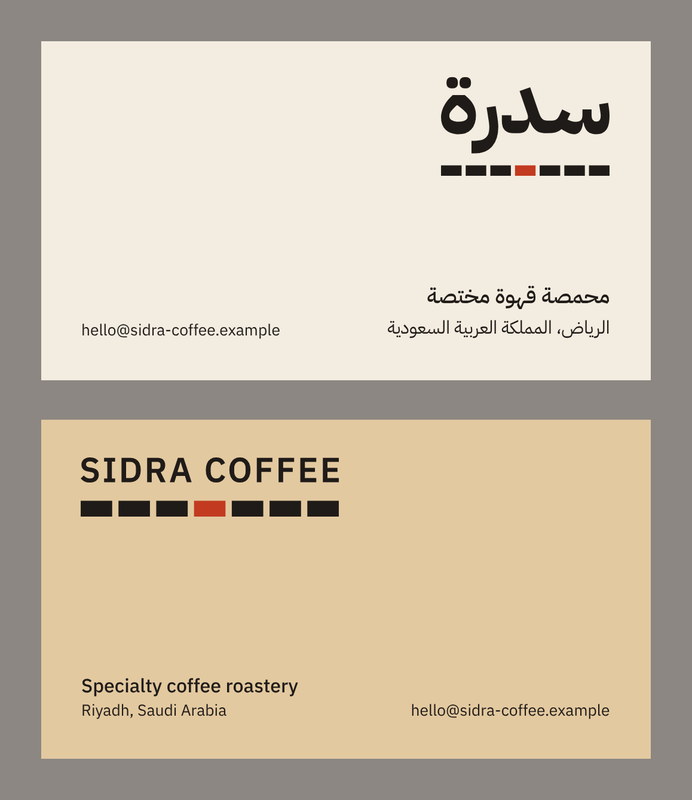
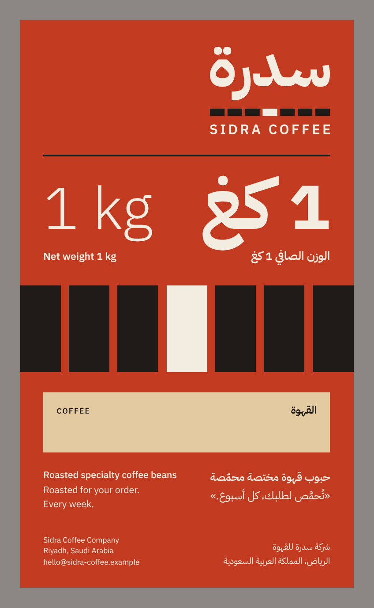

Mini brand guidelinesVersion 02 · 2026-11-13 · Arabic and English

01 — About this document
This is the short guide to the Sidra Coffee identity: the logo, colours, typefaces, the seven-bar system and two applications. Use it whenever you make something that carries the name. The logo files and tokens.json hold the exact values; this document explains how to use them.
01 — عن هذا الدليل
هذا دليل مختصر لهوية سدرة للقهوة: الشعار، والألوان، والخطوط، ونظام الأعمدة السبعة، وتطبيقان. ارجع إليه كلما صمّمت شيئًا يحمل الاسم. القيم الدقيقة موجودة في ملفات الشعار وفي ملف tokens.json، وهذا الدليل يشرح طريقة استعمالها.
02 — Brand foundation
Promise. Your order, roasted this week.
Who it is for. Independent café owners in Riyadh, and home brewers who want the same standard.
Values. On schedule. Plain facts. On the café's side. Hospitality.
Personality. Dependable, not rigid. Rooted and Arabic-led, not folkloric. Plain-spoken, not boastful. Hospitable, not salesy.
02 — أساس العلامة
الوعد: طلبك يُحمَّص هذا الأسبوع.
لمن: أصحاب المقاهي المستقلة في الرياض، ومحبّو تحضير القهوة في المنزل الذين يريدون المستوى نفسه.
القيم: على الموعد. كلام واضح. في صفّ المقهى. ضيافة.
الشخصية: يُعتمد عليها بلا تصلّب. أصيلة وعربية أولًا بلا فولكلور. واضحة بلا تباهٍ. مضيافة بلا إلحاح.
The idea — Weekly Beat
The week has seven beats and one of them is your roast. Seven equal bars, the centre one lit. The lit bar is fixed and illustrative: it does not stand for a particular day.
الفكرة — إيقاع الأسبوع
للأسبوع سبع نبضات، وواحدة منها تحميص طلبك. سبعة أعمدة متساوية، والأوسط منها مضاء. العمود المضاء ثابت ورمزي، ولا يدل على يوم بعينه.
Sidra Coffee · Mini brand guidelines v02 · System test, fictional client1 / 6
03 — Logo and usage
الشعار واستعماله
The Arabic wordmark leads. Under it sits the bar row, exactly as wide as the word; in the bilingual lockup SIDRA COFFEE is spaced to the same width. Use the primary lockup wherever Arabic is read, the bilingual lockup on packaging and shared material, and the Latin-led lockup only where there is no Arabic at all.
الكلمة العربية أولًا. تحتها صف الأعمدة بعرض الكلمة تمامًا، وفي الشعار الثنائي تُضبط عبارة SIDRA COFFEE على العرض نفسه. استعمل الشعار الأساسي حيثما يُقرأ بالعربية، والثنائي على العبوات والمواد المشتركة، واللاتيني حين لا يوجد نص عربي إطلاقًا.
Clear space = height of the letter د (0.27 × logo width) on every side
المساحة الآمنة = ارتفاع حرف الدال من كل جهة
| Version | Screen, minimum | Print, minimum | النسخة |
|---|
| Primary with seven bars | 32 px high | 10 mm wide | الأساسي بسبعة أعمدة |
| Bilingual with seven bars | 48 px high | 18 mm wide | الثنائي بسبعة أعمدة |
| Small version: one solid rule, centre seventh lit | 16 to 31 px high | 6 to 10 mm wide | النسخة الصغيرة: خط واحد وسُبعه الأوسط مضاء |
| Icon with seven bars / small icon | 48 px / 16 px | 10 mm / 5 mm | الأيقونة / الأيقونة الصغيرة |
| Wordmark alone | below 16 px | below 6 mm | الكلمة وحدها |
Screen sizes come from pixel tests. Print sizes are simulated at 600 dpi and must be confirmed on a press proof.
Test at 16 px high, enlarged 10 times. Left to right in pairs: primary, bilingual, Latin-led, icon; each with seven bars, then the small version. At 16 px the seven bars merge in the primary, bilingual and icon, so the small version is used.
اختبار بارتفاع 16 بكسل، مكبّرًا 10 مرات. عند هذا الحجم تلتحم الأعمدة السبعة في الشعار الأساسي والثنائي والأيقونة، فتُستعمل النسخة الصغيرة.
Sidra Coffee · Mini brand guidelines v02 · System test, fictional client2 / 6
04 — Logo misuse
ما لا يُفعل بالشعار
Always use the supplied files. The eight examples below are wrong. Each one breaks a rule that keeps the seven bars readable as one fixed sign.
استعمل الملفات المسلَّمة دائمًا. الأمثلة الثمانية أدناه خاطئة، وكل واحد منها يخالف قاعدة تحفظ الأعمدة السبعة علامةً ثابتة مقروءة.
× Do not move the lit bar.
لا تنقل العمود المضاء.
× Do not light more than one bar.
لا تُضئ أكثر من عمود.
× Do not change the count. Always seven.
لا تغيّر العدد. سبعة دائمًا.
× Do not outline the bars.
لا ترسم الأعمدة مفرّغة.
× Do not rotate or curve.
لا تُدِر الشعار ولا تقوّسه.
× Do not stretch or squeeze.
لا تمطّ الشعار ولا تضغطه.
× Do not use other colours. No green.
لا تستعمل ألوانًا أخرى. لا أخضر.
× No shadows, gradients or effects.
لا ظلال ولا تدرّجات ولا مؤثرات.
Also
- Do not type the name in a font in place of the wordmark.
- Do not label the bars with day names.
- Do not colour the two dots of the ة or turn them into a symbol.
- Do not place the bar row beside a real barcode: keep them on different faces, or one bar-row width apart.
- Do not set "Sidra" or «سدرة» beside an origin or variety word.
كذلك
- لا تكتب الاسم بخط طباعي بدل الكلمة المرسومة.
- لا تضع أسماء الأيام على الأعمدة.
- لا تلوّن نقطتَي التاء المربوطة ولا تحوّلهما إلى رمز.
- لا تضع صف الأعمدة بجوار باركود حقيقي: اجعلهما على وجهين مختلفين، أو اترك بينهما عرض صف كامل.
- لا تضع «سدرة» أو "Sidra" بجوار اسم منشأ أو سلالة قهوة.
One-colour versions
In black or white the lit bar cannot be shown by colour, so all seven bars are solid. Use one-colour versions only where full colour is impossible: stamps, embossing, single-colour print.
النسخ بلون واحد
في الأسود أو الأبيض لا يمكن تمييز العمود المضاء باللون، فتكون الأعمدة السبعة كلها مصمتة. استعمل هذه النسخ فقط حين يتعذّر اللون الكامل: الأختام، والبصم البارز، والطباعة بلون واحد.
Sidra Coffee · Mini brand guidelines v02 · System test, fictional client3 / 6
HEX #F3ECE0
RGB 243 236 224
CMYK 4 6 12 0 *
Pantone waived for system test; required before print
Default background
HEX #E3C9A0
RGB 227 201 160
CMYK 10 20 40 0 *
Pantone waived for system test; required before print
Warm second ground
HEX #1F1B18
RGB 31 27 24
CMYK 60 60 60 85 *
Body text prints 0 0 0 100
Pantone waived for system test; required before print
Text, unlit bars, rules
HEX #C23A20
RGB 194 58 32
CMYK 15 90 100 5 *
Pantone waived for system test; required before print
The lit bar; one field or headline
HEX #6F6861
RGB 111 104 97
CMYK 50 47 50 20 *
Pantone waived for system test; required before print
Captions, on Paper only
* CMYK values are approximate and uncalibrated. Pantone references and ICC-calibrated CMYK are waived for this system test and are required before print.
Share of a typical layout: Paper 45 · Crema 25 · Ink 15 · Ember 10 · Ash 5
- Warmth comes from Crema. Any piece with more than one surface uses Crema on at least one.
- Ember appears once per layout as a field or a headline, plus the lit bar. Never body text.
- No green, no gradients, no tints.
- الدفء يأتي من الكريما. كل قطعة لها أكثر من سطح تستعمل الكريما في سطح واحد على الأقل.
- الجمر يظهر مرة واحدة في التصميم، مساحةً أو عنوانًا، إضافة إلى العمود المضاء. ولا يُستعمل لنص المتن.
- لا أخضر، ولا تدرّجات، ولا درجات مخففة.
Text pairs that pass WCAG AA (contrast ratio, calculated)
حبر على ورق
Ink on Paper 14.6:1
حبر على كريما
Ink on Crema 10.7:1
ورق على حبر
Paper on Ink 14.6:1
ورق على جمر
Paper on Ember 4.6:1
رماد على ورق
Ash on Paper 4.7:1
جمر
Ember on Paper 4.6:1, from 24 px
Not for text
Ink on Ember 3.2:1 (bars, rules and type of 24 px or more only). Ash on Crema 3.4:1. Ember on Crema 3.4:1. Crema on Paper 1.4:1.
Colour blindness
The lit bar against the Ink bars measures 3.2:1. In a red-blind (protan) simulation this falls to about 2.4:1, so colour alone is not enough: the lit bar is always the centre bar, and its position identifies it. Against Paper it stays above 3.9:1 in every simulation.
لا تُستعمل للنص
حبر على جمر 3.2:1 (للأعمدة والخطوط والعناوين الكبيرة فقط). رماد على كريما 3.4:1. جمر على كريما 3.4:1. كريما على ورق 1.4:1.
عمى الألوان
تباين العمود المضاء مع أعمدة الحبر 3.2:1، وينخفض في محاكاة عمى اللون الأحمر إلى نحو 2.4:1. لذلك لا يكفي اللون وحده: العمود المضاء هو الأوسط دائمًا، وموضعه يعرّف به. وعلى الورق يبقى تباينه أعلى من 3.9:1 في كل المحاكيات.
Sidra Coffee · Mini brand guidelines v02 · System test, fictional client4 / 6
06 — Typography, bars and grid
الخطوط والأعمدة والشبكة
Display · 700
5 × body
Every week.
كل أسبوع.
Sub-head · 500
1.6 × body
Roasted to order
يُحمَّص لطلبك
Body · 400
1
Sidra Coffee roastery roasts each order in that week's roast, in 250 g and 1 kg bags.
تحمّص محمصة سدرة للقهوة كل طلب ضمن تحميص أسبوعه، في أكياس 250 غ و1 كغ.
Product label · 600
Net weight 1 kg
الوزن الصافي 1 كغ
Caption · 0.65
EN 600 caps +12%
Riyadh, Saudi Arabia
الرياض، المملكة العربية السعودية
Figures
AR 700 · EN Light 300
250 g
250 غ
IBM Plex Sans Arabic and IBM Plex Sans, both under the SIL Open Font License. Fallbacks: Noto Sans Arabic, then Tahoma; Helvetica Neue, then Arial.
- Set Arabic 15 to 20% larger than the Latin beside it.
- Arabic is never tracked, slanted or faux-bolded. Tracking is for Latin captions only.
- Western numerals (0123) in both languages.
- Arabic sits right and Latin left, each in its own block. Never line by line.
IBM Plex Sans Arabic وIBM Plex Sans، وكلاهما برخصة SIL للخطوط المفتوحة. البدائل: Noto Sans Arabic ثم Tahoma، و Helvetica Neue ثم Arial.
- يُضبط العربي أكبر من اللاتيني المجاور له بنسبة 15 إلى 20%.
- لا تباعد بين حروف العربي، ولا إمالة، ولا تسميك مصطنع. التباعد للتعليقات اللاتينية فقط.
- الأرقام غربية (0123) في اللغتين.
- العربي يمينًا واللاتيني يسارًا، كلٌّ في كتلته. لا سطرًا بسطر.
Band: each bar taller than wide (1:2 to 1:4). Packaging and large fields.
Rule: each bar 2 wide to 1 high. Logo and dividers.
Grid: seven columns. Arabic text on four from the right, secondary content on three.
- Always seven equal bars in one row, the fourth lit. Gap = one fifth of a bar's width.
- Lit bar: Ember on Paper, Crema and Ink. On Ember the bars are Ink and the lit bar is Paper.
- Pattern: band rows stacked with the same gap, three rows or more, lit bars in one column.
- Section breaks are a 2 px Ink hairline. Square corners. No shadows.
- No icons or illustration. Photography shows beans, bags and equipment only, flat and frontal on Paper or Crema. No people, no hands.
- سبعة أعمدة متساوية في صف واحد دائمًا، والرابع مضاء. الفراغ = خُمس عرض العمود.
- العمود المضاء: جمر على الورق والكريما والحبر. وعلى الجمر تكون الأعمدة بلون الحبر والمضاء بلون الورق.
- النمط: صفوف عريضة متراصّة بالفراغ نفسه، ثلاثة صفوف فأكثر، والأعمدة المضاءة في عمود واحد.
- الفواصل خط حبر بسماكة 2 بكسل. الزوايا قائمة. بلا ظلال.
- لا أيقونات ولا رسوم. الصور للحبوب والأكياس والمعدّات فقط، بلقطة أمامية مسطّحة على ورق أو كريما. بلا أشخاص ولا أيدٍ.
Sidra Coffee · Mini brand guidelines v02 · System test, fictional client5 / 6
07 — Voice, applications and files
الصوت والتطبيقات والملفات
Voice
Plain, specific, short sentences. Numbers before adjectives. In running copy write "Sidra Coffee roastery", not "Sidra" alone.
Say: roastery, roasted to order, every week, on schedule, fresh.
Avoid: best, finest, premium, award-winning, passion, journey.
Tagline, wholesale material only: Roasted for your order. Every week.
الصوت
عربية فصيحة مبسّطة، مباشرة ومحدّدة، تُكتب أصلًا بالعربية ولا تُترجم. الأرقام قبل الصفات.
نقول: محمصة، يُحمَّص لطلبك، كل أسبوع، على الموعد، طازجة.
نتجنّب: الأفضل، الأجود، رقم 1، فاخر، حصري، شغف، رحلة.
الشعار اللفظي، لمواد الجملة فقط: «تُحمَّص لطلبك، كل أسبوع.»

Business card, 90 × 50 mm. Arabic side on Paper, English side on Crema. Email is the only contact channel.
بطاقة العمل، 90 × 50 مم. البريد الإلكتروني هو قناة التواصل الوحيدة.

1 kg wholesale bag label, 100 × 170 mm. Ember ground, Ink band, Paper lit bar. The Crema panel is where the coffee is written, kept apart from the name.
ملصق كيس الجملة 1 كغ. اللوحة الكريمية لكتابة نوع القهوة، بعيدًا عن الاسم.
Files in 04-identity
| 02-logo | SVG, PDF, PNG at 1x, 2x, 4x; outlined. primary, bilingual, latin, icon, wordmark; colour, colour-reversed, colour-on-ember, black, white; "small" versions |
| 03-system | tokens.json, brand-v02.css, system.md |
| 04-applications | Card and label as HTML |
| licences.md | Font licences |
Still open
- The name has had one web search only, and the mark itself has not been compared with other marks. This is not a legal trademark clearance; a formal search is needed before registration.
- Pantone and calibrated CMYK values were waived for this test and are required before any print job. Minimum print sizes need a press proof.
- The wordmark is outlined IBM Plex Sans Arabic Bold, accepted for this test. A redraw is required before real use.
- The Arabic text needs a native proofread before release.
- Questions about this guide go to the agency's Creative Director.
نقاط مفتوحة
- أُجري للاسم بحث واحد على الإنترنت فقط، ولم يُقارَن الشعار نفسه بعلامات أخرى. هذا ليس فحصًا قانونيًا للعلامة التجارية، ويلزم بحث رسمي قبل التسجيل.
- أُجّلت مراجع بانتون وقيم CMYK المعايَرة في هذا الاختبار، وهي لازمة قبل أي طباعة. والأحجام الدنيا المطبوعة تحتاج إلى تجربة طباعية.
- الكلمة المرسومة مأخوذة من خط IBM Plex Sans Arabic Bold وقُبلت لهذا الاختبار، ويلزم إعادة رسمها قبل الاستعمال الفعلي.
- النص العربي يحتاج إلى مراجعة لغوية من قارئ عربي قبل النشر.
- الأسئلة عن هذا الدليل تُوجَّه إلى المدير الإبداعي في الوكالة.
Sidra Coffee · Mini brand guidelines v02 · System test, fictional client6 / 6